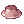

Cinderfire's Triangle Shot Shadow Chaser Guide
| Shadow Chaser | |||||||||||||||||||
|---|---|---|---|---|---|---|---|---|---|---|---|---|---|---|---|---|---|---|---|
| Job Base: | Thief | ||||||||||||||||||
| Written By: | Cinderfire | ||||||||||||||||||
| |||||||||||||||||||
Overview
Brief introduction about yourself, the class and guide goes here.
Stats
Summary of the section
- STR - Notes, what's this Stat used for, recommended amounts
- AGI - Notes
- VIT - Notes
- INT - Notes
- DEX - Notes
- LUK - Notes
Skills
List of notable skills, explanation of their uses & mechanics & formulas.
For automatic parsing of the images and links to divine pride, use our Template:Skill List
First Job Skills
Use our Template:Skill List in this section.
| Skill | Notes |
|---|---|
 Sword Mastery Lv ? Sword Mastery Lv ?
|
Mechanics of the skills, their uses and your personal thoughts |
 Magnum Break Lv 10 Magnum Break Lv 10
|
Mechanics of the skills, their uses and your personal thoughts |
Second/Trans Job Skills
Third Job Skills
Equipment
I recommend using our Template:Item List for linking items. The template automatically parses the thumbnail of the item, and creates a link to Divine Pride.
For cards, see Template:Card
Recommended format:
Headgear
| Item | Type | Way to obtain | Notes |
|---|---|---|---|
|  Hat [1] | Upper | Drop | Personal notes, effect of the item. |
| Card | Monster drop | Personal notes, effect of the card. |
Armor
Weapons
Shields
Garments
Shoes
Accessories
Builds
Summary of the section (optional)
Your build
Introduction about the build, brief summary, optional.
Stats
An example stat build goes here:
- STR 100
- AGI 100
- VIT 100
- INT 100
- DEX 100
- LUK 100
Skills
Example of an already currently laid out skill build, OR listing essential skills for the build with comments
Either text or image format.
Equipment
List of the key pieces of equipment recommended for said build.
Strategy
Explanation of the build's uses
Gameplay
Class specific tips and tricks, such as certain skill mechanics and special roles in certain environments.
For example: Warlock's spellbook mechanics and Kage/Oboro's charms, different weapon types and their uses for Rebellions
Leveling
Leveling places and tactics go here. To help you start, some of the relatively easier Eden Equipment Quests and the required levels of a number of instance dungeons have been added. This is mainly to help you as a writer, and you should adjust the level ranges in your guide with your own discretion.
For the higher level ranges, please also add other hunting and item collecting quests from Eden Quest Boards in addition to Gramps. This is so that your reader will know how to level while Gramps is on cooldown. Adding a few pointers about farming zeny is also recommended, for the fresh new players that may be reading your guide. Just be sure that your recommendations is actually doable for the class you're writing about; for example, you shouldn't tell a Full Support Arch Bishop to solo level and farm in Juperos.
Feel free to edit or remove parts of the template below as you see fit for your own guide, and remember to remove this text when you're editing.
Lv 1 - Lv 99
- Lv 1 - Lv 30
- Recommended monsters to hunt, quests to take, strategies, etc.
- Lv 26 - Lv 32
- Instructor Boya's Eden Equipment Quest in Payon Cave: Talk to the Eden Group Member outside of Payon Cave before you start hunting Skeletons and Poporings. When you've completed them, report to the Eden Group Member, then to Instructor Boya. You will receive your first set of Eden Equipment from Administrator Michael in the room behind the Blue Door.
- Lv 50 - Lv 59
- Instructor Boya's Eden Equipment Quest in Orc Dungeon: Talk to the Eden Group Member outside of Orc Dungeon before you start hunting Orc Zombies and Orc Skeletons. When you've completed them, report to the Eden Group Member then to instructor Boya. You will receive your second set of Eden Equipment from Administrator Michael in the room behind the Blue Door.
- Lv 70 - 79
- Instructor Ur's Eden Equipment Quest in Glast Heim: Talk to the Eden Group Member outside of Glast Heim Churchyard before you start hunting Wraiths and Evil Druids. When you've completed them, report to the Eden Group Member then to instructor Ur. You will receive your third and final set of Eden Equipment from Blacksmith Thorn in the room behind the Blue Door.
- Lv 85 - Lv 114
- Level range to join the first bracket of Gramps quests. Note that Gramps quests are rotated at the start of every month. You can also hunt them outside of Gramps map. Use the
@whereis (monster name)command to find out where a monster spawns.
- Level range to join the first bracket of Gramps quests. Note that Gramps quests are rotated at the start of every month. You can also hunt them outside of Gramps map. Use the
- Lv 91 - Lv 99
Note that several quests in this board in particular give you the option of rewarding you with normal Base and Job EXP, or give zero Base EXP and twice as much Job EXP. If you think a particular build or job class may have trouble with getting Job Levels, please suggest some Lv 91-99 quests for them, and mention the double Job EXP reward option.
Lv 100+
If you have been giving solo leveling tips so far, you must give tips for leveling in a party in this section. Few job classes are able to level solo easily after reaching Lv 100, and players may have difficulty adjusting from solo leveling to party leveling. It's very important to explain once more the role of the job class in a party, what they can do to help, what skills to use and in which situation, and so on.
- Lv 100
- Minimum level to access Sara's Memory, Bangungot Hospital.
- You must complete Cautious Village and Nurse in Port Malaya quests to access Bangungot Hospital.
- Minimum level to access Sara's Memory, Bangungot Hospital.
- Lv 115 - Lv 144
- Level range to join the second bracket of Gramps quests.
- Lv 120
- Minimum level to access Nightmarish Jitterbug, Ghost Palace.
- Lv 125
- Minimum level to access Airship Assault, Devil's Tower.
- Lv 130
- Minimum level to access Old Glast Heim Normal Mode, Charleston Crisis, Buwaya Cave.
- Lv 140
- Minimum level to access Horror Toy Factory, Central Laboratory, Malangdo Culvert, Bakonawa Lake.
- You must complete Cautious Village and Bakonawa Extermination to access Bakonawa Lake.
- Minimum level to do Dimensional Travel. This is a pre-requisite quest to access Bios Island.
- Minimum level to access Horror Toy Factory, Central Laboratory, Malangdo Culvert, Bakonawa Lake.
- Lv 145 - Lv 175
- Level range to join the third bracket of Gramps quests.
- Lv 145
- Minimum level to access Sarah and Fenrir.
- Lv 160
- Minimum level to access Bios Island, Morse Cave, Temple of the Demon God, Monster Hunter, and Deserted Island.
- Recommended level to try Old Glast Heim Hard Mode if you have not done so at this point.